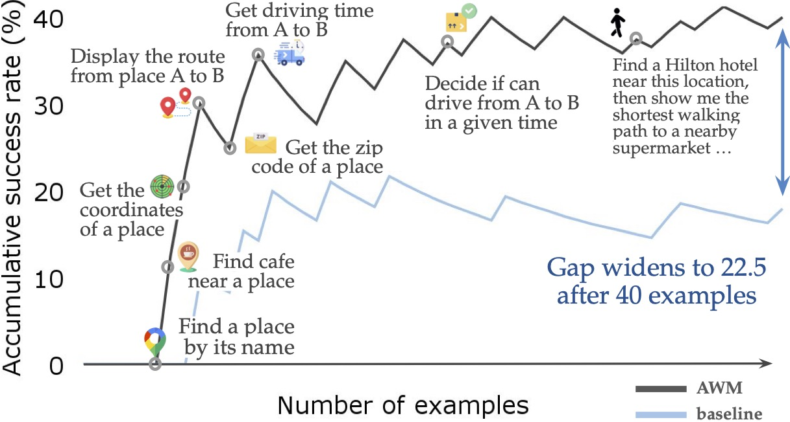
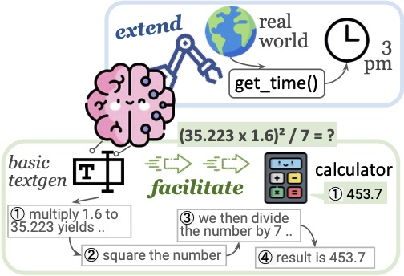

PhD Student
Carnegie Mellon University
Language Technologies Institute
About Me
I am currently a 2nd year PhD student at the Language Technologies Institute at Carnegie Mellon University working with Daniel Fried and Graham Neubig. My primary research interest is to use programmatic approaches to solve real-world tasks. Particularly, I am working on:
Augmented Language Models [Survey]
- Leverage and improve programs
- Knowledge: retrieve texts [FilCo] [ReAtt] [RAGGED] and structured data [WikiTable] [TUTA] [K-BERT]
- Other modalities: act on images [TroVE], or map fixed LMs to images [SPAE]
Agent(ic System)s that Automate Human Labor
- Using LMs to do human tasks: e.g., data analysis [HiTab] software programming [ODEX] web navigation [AWM]
- Facilitate human verification: increase accuracy and accelerate the process [TroVE]
I am currently looking for internships for summer 2025. Feel free to reach out for chat and/or check out my CV here.
News
- Oct 2024: Joined the panelist of Our CS (Workshop for Undergraduates in CS) and shared some of my thoughts about research
- Sep 2024: Gave an invited talk at Camel-AI 🐪 about Agent Workflow Memory, check out the video, paper, and tweet
- Jul 2024: Gave a tutorial at SIGIR about Large Language Models for Tabular Data, check out the slides & recordings if you're interested!
- Jun 2024: We released a new benchmark CodeRAG-Bench that enables versatile exploration with retrieval-augmented code generation
- May 2024: Organized our CMU Agent Workshop 🤖 with plenty of events -- insightful tutorials, talks, and posters! I also gave two (short) tutorials about tool-augmented LMs and codegen testbeds.
- Mar 2024: Gave a guest lecture about "Language Agents and Tool Use" at the Advanced NLP course (11-711) course, check out the recordings!
🐾 Older News
Mar 2024: Gave a talk at the [FLAME_ (Foundation and LAnguage Model) 🔥] seminar, about [our recent survey] and [TroVE]
Feb 2024: Gave a talk about Language Models with Tools at the LLM as Agent Seminar, about [TroVE] and works in progress 🤫
Feb 2024: Gave a lecture about Evaluation (metrics and benchmarks) for the Neural Code Generation (11-891) course 💻
Jan 2024: TAing for the new course [11-891 Neural Code Generation], reach out if you want to discuss more project ideas 🪄
Nov 2023: Gave a guest lecture about Evaluation and Benchmarks for Code Generation for the Advanced NLP course (11-711) 👩🏫 more details [here]
Aug 2023: A talk about 🛠️ Tool using, learning, and making with LLMs at Code Generation Reading Group, check out the [video]
Apr 2023: Gave a talk about [ODEX] at the Machine Learning Methods in Software Engineering (video) hosted by JetBrains Research Team 👩💻
Upcoming Events
- Nov 2024: I will give a talk at UIUC (the 11th) about "Solving Real-World Tasks via Program Generation". Feel free to check out my slides here. I'm happy to meet up in UIUC in person!
- Mar 2025: Will give a talk at AAAI Workshop on Web Agents. Stay tuned for the topic and content 🤗
My Recent Favorite Publications

Agent Workflow Memory

What Are Tools Anyway? A Survey from the Language Model Perspective

TroVE: Inducing Verifiable and Efficient Toolboxes for Solving Programmatic Tasks
Get Connected
If you want to get connected, discuss potential project ideas, ask about CMU application, or chat about any other relevant topics, my office hours are available every Friday 4-5 pm EST. Email me to secure a time to chat!
I often mentor a small number of students every semester. However, as I got plenty of emails, I might not be able to reply to all of them.
If you are from underrepresented groups, or do not have much research experience, you are encouraged to reach out!
If You're Interested in My Name
My name in Chinese is 王芷若, which reads as Wang, Zhiruo. It is usually hard for non-native speakers to pronounce, so you can also call me Zora (as ZR is similar to Zhi Ruo).
I love my name, especially in Chinese characters, since it has a more beautiful meaning than in English alphabets. 芷 stands for 白芷 (Angelica dahurica) and 若 stands for 杜若 (Pollia japonica), which are two kinds of Chinese herbal medicine. Also, 芷若 is a beautiful vanilla 🌿